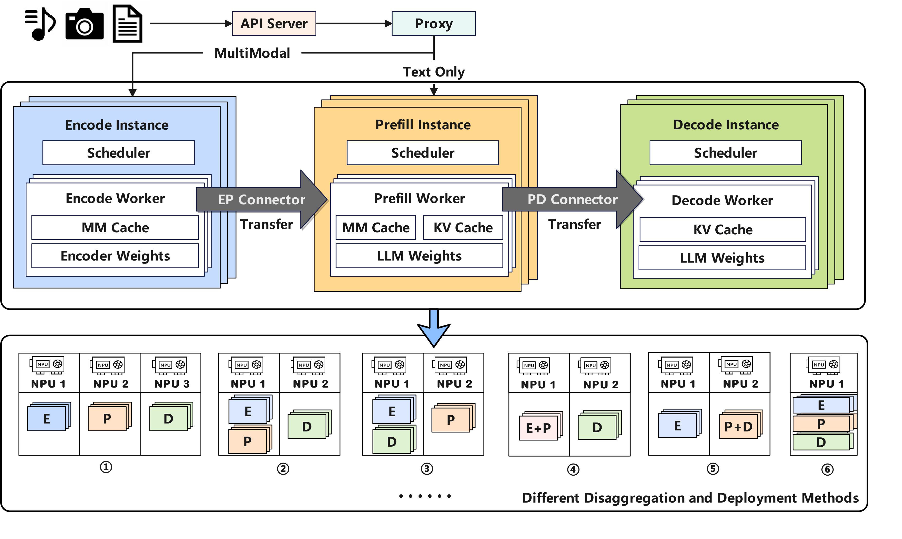

Disaggregated-encoder
Why disaggregated-encoder?
A disaggregated encoder runs the vision-encoder stage of a multimodal LLM in a process that is separate from the pre-fill / decoder stage. Deploying these two stages in independent vLLM instances brings three practical benefits:
Independent, fine-grained scaling
Vision encoders are lightweight, while language models are orders of magnitude larger.
The language model can be parallelised without affecting the encoder fleet.
Encoder nodes can be added or removed independently.
Lower time-to-first-token (TTFT)
Language-only requests bypass the vision encoder entirely.
Encoder output is injected only at required attention layers, shortening the pre-fill critical path.
Cross-process reuse and caching of encoder outputs
In-process encoders confine reuse to a single worker.
A remote, shared cache lets any worker retrieve existing embeddings, eliminating redundant computation.
Design doc: https://docs.google.com/document/d/1aed8KtC6XkXtdoV87pWT0a8OJlZ-CpnuLLzmR8l9BAE
Usage
The current reference pathway is ExampleConnector. The ready-to-run scripts below show the workflow:
1 Encoder instance + 1 PD instance:
examples/online_serving/disaggregated_encoder/disagg_1e1pd/
1 Encoder instance + 1 Prefill instance + 1 Decode instance:
examples/online_serving/disaggregated_encoder/disagg_1e1p1d/
Development

Disaggregated encoding is implemented by running two parts:
Encoder instance – a vLLM instance to perform vision encoding.
Prefill/Decode (PD) instance(s) – runs language pre-fill and decode.
PD can be in either a single normal instance with (E + PD) or in disaggregated instances with (E + P + D)
A connector transfers encoder-cache (EC) embeddings from the encoder instance to the PD instance.
All related code is under vllm/distributed/ec_transfer.
Key abstractions
ECConnector – interface for retrieving EC caches produced by the encoder.
Scheduler role – checks cache existence and schedules loads.
Worker role – loads the embeddings into memory.
EPD Load Balance Proxy -
Multi-Path Scheduling Strategy - dynamically diverts the multimodal request or text requests to the corresponding inference path
Instance-Level Dynamic Load Balancing - dispatches multimodal requests based on a least-loaded strategy, using a priority queue to balance the active token workload across instances.
We create the example setup with the MooncakeLayerwiseConnector from vllm_ascend/distributed/kv_transfer/kv_p2p/mooncake_layerwise_connector.py and refer to the examples/disaggregated_prefill_v1/load_balance_proxy_layerwise_server_example.py to facilitate the kv transfer between P and D. For step-by-step deployment and configuration of Mooncake, refer to the following guide:
https://docs.vllm.ai/projects/ascend/en/latest/tutorials/pd_disaggregation_mooncake_multi_node.html
For the PD disaggregation part, when using MooncakeLayerwiseConnector: The request first enters the Decoder instance,the Decoder triggers a remote prefill task in reverse via the Metaserver. The Prefill node then executes inference and pushes KV Cache layer-wise to the Decoder, overlapping computation with transmission. Once the transfer is complete, the Decoder seamlessly continues with the subsequent token generation.
docs/source/developer_guide/Design_Documents/disaggregated_prefill.md shows the brief idea about the disaggregated prefill.
Limitations
Disable
--mm-processor-cache-gb 0if you want to use cross-process cachingFor the PD disaggregation part, refer to the limitations of PD decomposition